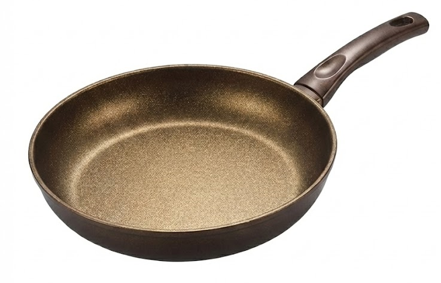
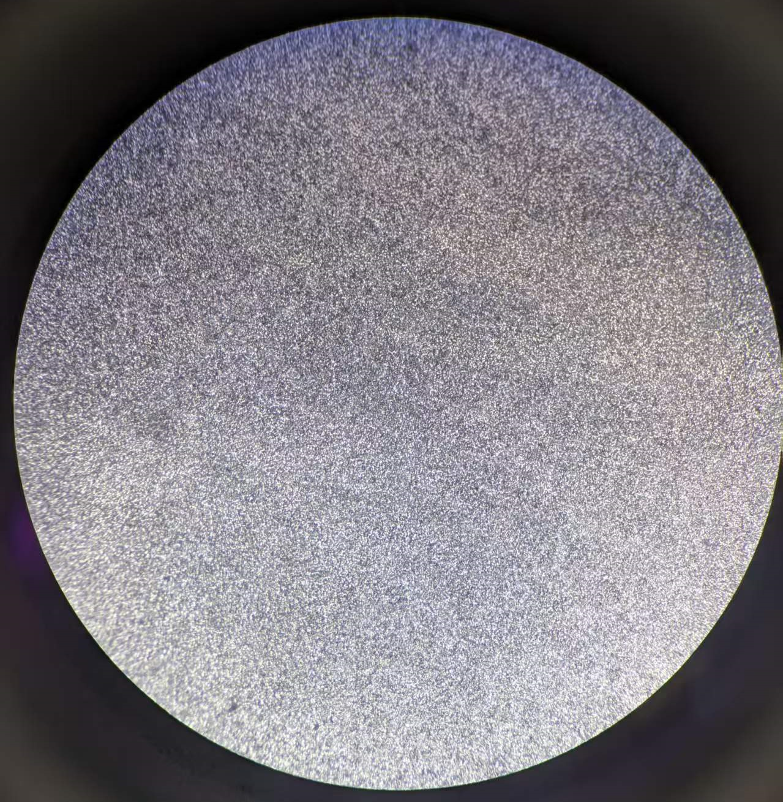

For decades, our kitchens have been defined by a "consumable"—the traditional nonstick pan. We grew accustomed to its fragility, accepted its "replace every six months" fate; we worried about harmful substances it might release at high temperatures, and carefully avoided using metal spatulas.
Today, we declare that era over.
What we bring is not another patch to traditional coatings, but a fundamental transformation. We present to you an ideal kitchen tool—a cooking vessel that can truly be used for the long term, even passed down through generations.
Welcome to the "Diamond Age" of kitchen cooking.
The foundation of our technology comes from advanced processes in ultra-hard materials and aerospace—vacuum active fusion bonding.
Traditional coatings, whether Teflon (PTFE) or ceramic, merely "adhere" to the pan body like paint. They form a weak physical bond with the base, which means they will wear and peel.
Our technology, at temperatures exceeding 1000°C in a vacuum environment, uses our proprietary low-fluidity copper-based fusion alloy to achieve molecular-level metallurgical bonding between millions of micron-scale diamond crystals and the stainless steel pan body.
• This is not "adhesion," but "fusion": The diamond is no longer an independent coating—it has truly "grown" into the metal substrate and become an inseparable part of the pan itself.
• "Low-fluidity" fusion process: We overcame the challenge of uniform fusion on curved and vertical surfaces. Our specially formulated solder effectively resists gravity in the molten state, ensuring uniform diamond coating from bottom to sidewall.
A pure diamond surface provides excellent hardness, but to achieve an ideal daily cooking experience, we designed a clever dual-layer composite structure.
This is the pan's "immortal body." The protruding diamond crystal tips form an indestructible protective skeleton that bears almost all physical friction. You can confidently use any metal spatula or even steel wool for cleaning without worrying about scratches. Meanwhile, diamond's high thermal conductivity (several times that of copper) ensures heat spreads instantly and evenly across the entire pan, effectively reducing smoke and improving cooking efficiency.
We use high-performance food-grade silicone resin to fill the microscopic gaps in the diamond skeleton. It delivers:

| Item | Specification |
|---|---|
| Base Material | Food-grade 304/316 stainless steel composite |
| Core Technology | Vacuum active fusion bonding |
| Surface Material | Micron-scale synthetic diamond crystals |
| Fusion Alloy | Custom low-fluidity copper-based active fusion alloy |
| Infill Material | Food-grade high-temperature cured silicone resin |
| Safety Certification | Free of PTFE, PFOA, PFAS, GenX |
| Max. Operating Temperature | > 400°C |
| Compatible Cooktops | Gas, induction, electric, oven—all cooktops |
This is not just a new pan—it is a new philosophy of cookware.
We believe the best tools should serve people, not the other way around. Welcome to a new era of healthier, more durable, and freer cooking.

Company: Nanjing CuFeng Mechanical & Electrical Technology Co., LTD
Technical Contact: wangbo@tospike.com
Phone: +86 153 0519 1423
Address: No. 2 Xingzhi Road, Jiangbei New Area, Nanjing, Jiangsu, China